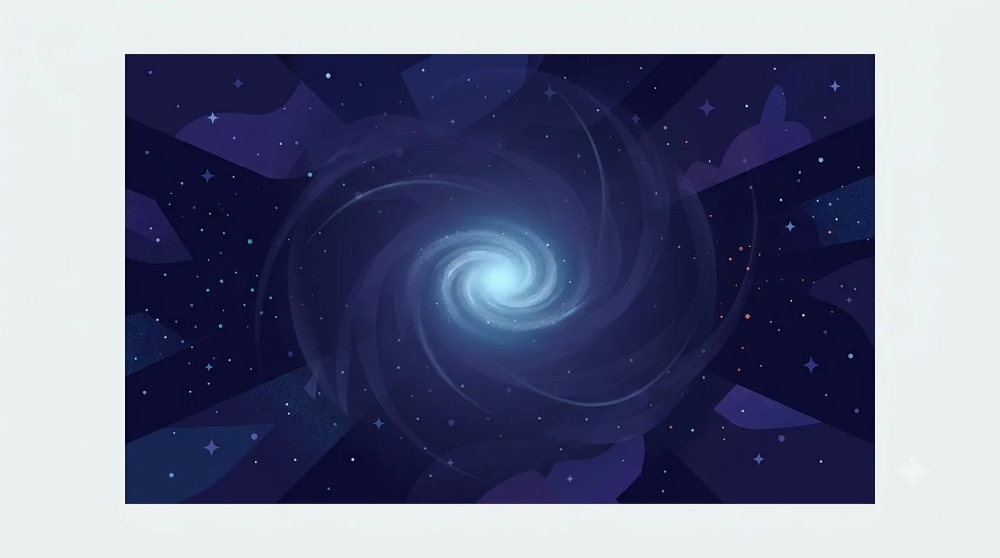

Dark Matter
Everything in this book so far — every quark, every lepton, every force carrier — belongs to what astronomers call "ordinary" or "baryonic" matter. And here's the humbling part: ordinary matter makes up less than about 5% of everything in the universe. The rest is something else entirely, something the Standard Model doesn't include at all.
Nobody has ever directly detected a dark matter particle. What astronomers have measured, repeatedly and consistently, is its gravitational fingerprint: galaxies rotate far faster at their outer edges than the visible matter in them could possibly explain — as if an enormous, invisible "halo" of extra mass surrounds every galaxy, holding it together. Gravitational lensing (light bending as it passes massive objects) and patterns in the cosmic microwave background — the faint afterglow of the Big Bang — both point to the same missing mass.

A haunting, beautiful illustration of a spiral galaxy glowing softly, surrounded by a much larger, barely-visible ghostly halo of faint indigo light and gravitational lensing arcs bending the light of background stars around it, suggesting a vast invisible mass no telescope can directly see. Deep-space palette, glowing blue accent used sparingly for the visible galaxy only, the dark matter halo rendered as translucent shadow and warped starlight rather than any glowing shape, flat-modern editorial illustration style, no text baked in. Target size ~1280×720px, 16:9 landscape; compose for a small on-page figure, subject centred with safe margins since it is letterboxed into a 16:9 box.
Generate this with your image agent, then drop the file here.